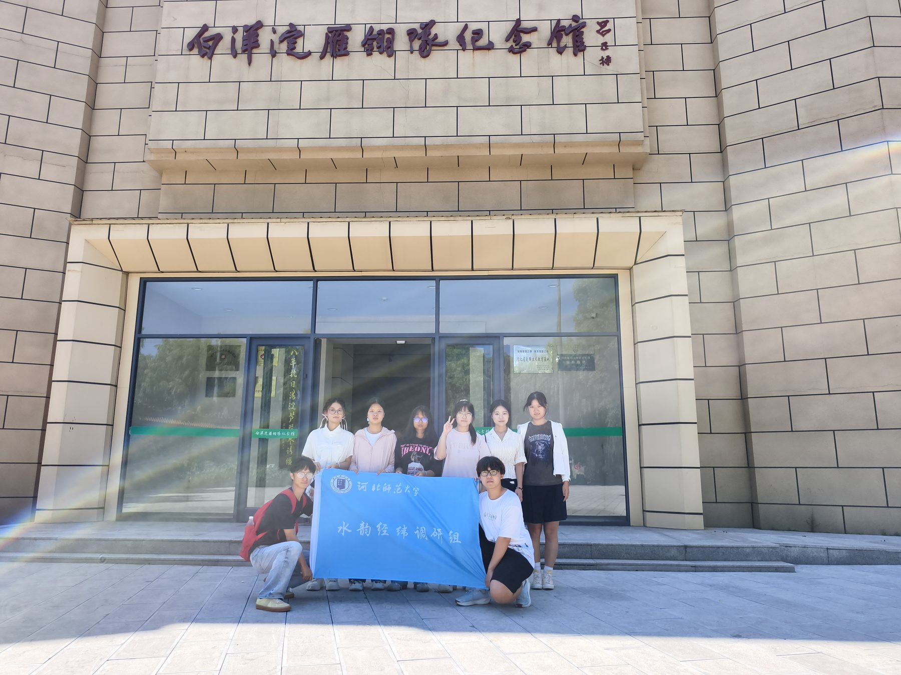

主题观察 · 2026 年 9 月 10 日
苇荡存薪火：读懂白洋淀的红色文化

万顷苇荡，千淀碧波。今天的白洋淀荷红苇绿、水鸟翩飞，这片如画水乡，八十多年前曾是烽火连天的抗日战场。由本地渔民、猎户组成的雁翎队，依托纵横交错的苇壕淀泊，驾小船、持土枪，开展神出鬼没的水上游击战，在华北平原书写下一段荡气回肠的红色传奇。雁翎队的名字自带水乡印记：当年猎户使用“大抬杆”火枪，为防止湖水打湿火药引信，会在枪口插上雁翎，这支水上游击队便由此得名。他们熟悉每一条苇沟、每一处港汊，埋伏芦苇丛中伏击敌人包运船、拔除岗楼据点，利用冰面、荷叶做掩护，以简陋装备抗击强敌，守护水乡家园。孙犁《荷花淀》、徐光耀《小兵张嘎》等文学作品，也让白洋淀抗战故事广为流传，造就独树一帜的“荷花淀派”文学记忆。如今雁翎队纪念馆保存大量史料实物，成为重要的爱国主义教育阵地。
红色历史从来脱离不了脚下水土。芦苇既是候鸟栖息的家园，也是当年游击战士天然的隐蔽屏障；渔家百姓的行船、渔猎本领，成为雁翎队克敌制胜的生存技能。红色记忆、水乡生态、渔家民俗本就深度交融。但水韵经纬调研队实地走访发现，当下红色文化传播仍存在现实短板。多数红色内容集中在纪念馆室内展陈，游船游览只讲自然风光；研学活动常常割裂历史与实地场景，学生在展馆了解抗战故事，乘船游淀却感受不到苇荡之中的烽火往事。许多本地老人口口相传的战斗轶事、民间记忆，缺少系统化采集与对外传播渠道，红色故事与真实水乡场景相互脱节。
红色文化不应只封存于展板文字，更要让游客行走在这片土地上，看得见风景，读得懂历史。这也是虚拟数字人青翎的重要设计初衷。青翎形象之中，雁翎羽毛正是致敬雁翎队的核心符号，与代表湿地的青头潜鸭、象征渔村民俗的苇编荷花纹饰融为一体，呼应生态、红色、民俗三者共生关系。依托LBS点位触发，当游船驶过昔日伏击战场的芦苇水域，青翎可以同步推送雁翎队战斗史实，把发生在这片苇荡的故事，和眼前实景结合在一起。同时通过素材投稿通道，收集本地老人口述抗战轶事，丰富红色内容素材库，打破展馆的空间限制。
碧水依旧浩荡，苇浪岁岁翻涌。传承白洋淀红色文化，不止是回望过往烽火，更是把革命记忆和水乡水土重新联结。让游客行走苇荡之间，既能欣赏荷苇盛景，也能读懂淀上儿女保家卫国的热血，真正读懂属于白洋淀的精神底色。